We Are Screwed!
The multiverse is in danger! Alone or in a team of up to 4 people, slide into the pilot’s seat, operate a turret, become a mechanic or even a janitor. There is a lot to do and no time to lose! Jump in and go above and beyond, where no one has ever screwed up before!

Developed by Rarebyte.
My roles: Narrative Designer, UI/UX Designer, Localization Agent.
I had the privilege of writing all the content for the game, originally in English, and also handled the complete French localization. My responsibilities included crafting small and humorous bios for each character (both playable and NPCs), quests for each Multiverse from a diverse cast of NPCs, and names and descriptions for each weapon (Module) and their variants, as well as worlds, ships, maps, enemies, bosses, items, and tools. The tone throughout is fun and light, incorporating absurd humor with wordplay, space puns, and a healthy dose of pop culture references.
Part of my responsibilities included redesigning the entire UI.
The challenge I faced was that the existing UI was considered a bit boring, with its main color being dark grey, and it didn’t look very polished.
Dialogue Box UI: Old and new.
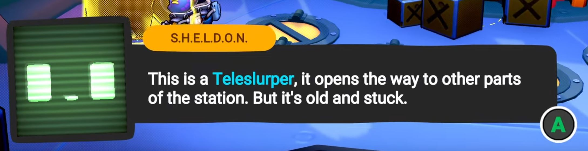 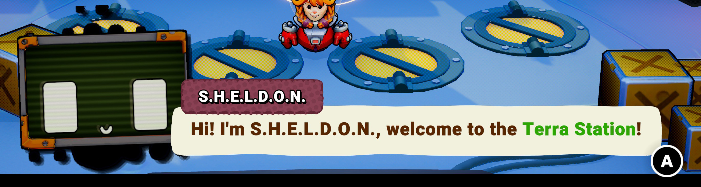The box now resizes vertically to fit the text, the colors are brighter and prettier, and the portrait is in a higher definition.
Tutorial page UI: Old and new.
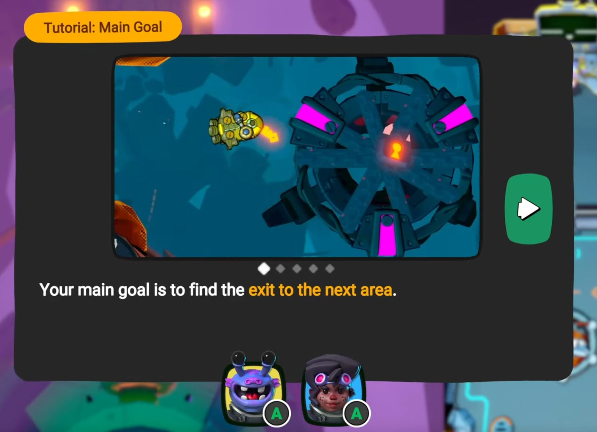 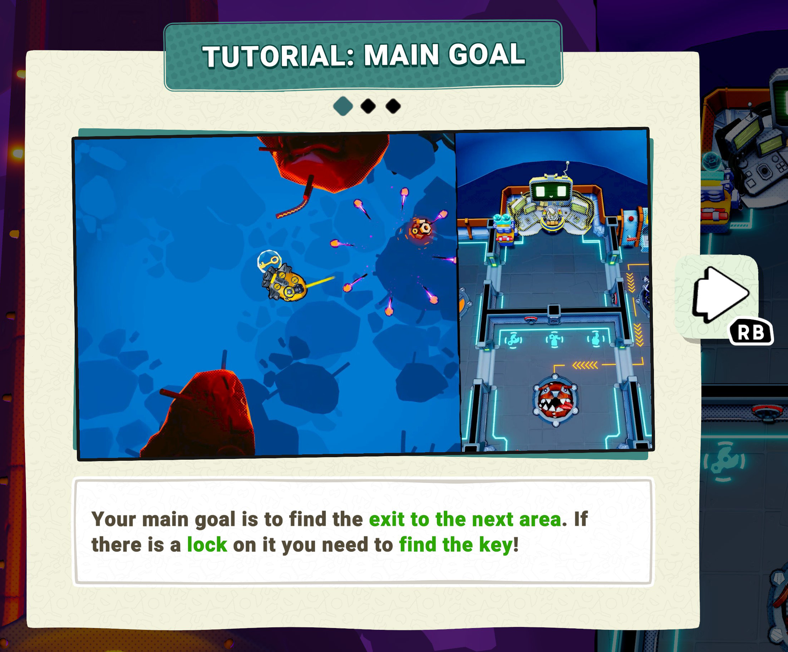As before, the colors were reworked to make the whole UI prettier and friendlier. One of the UX changes I made to this specific element was ensuring that the buttons to accept and, consequently, remove the tutorial page appear only on the last page. This was an attempt to encourage players to read the tutorials more, but as any UI/UX designer knows, making players read tutorials is never an easy task. In the end, what I learned was that if people don’t want to read, nothing will make them. Ultimately, my goal was to create a playable tutorial instead, because doing is better than reading (I was very inspired by Moving Out), but unfortunately, I never had the time to design a proper one.
Inspection window UI: Old, concept and in game.
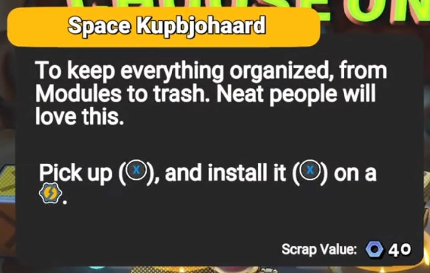 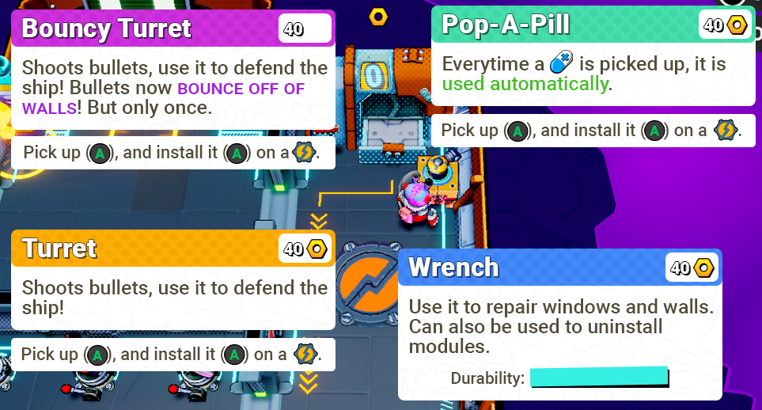 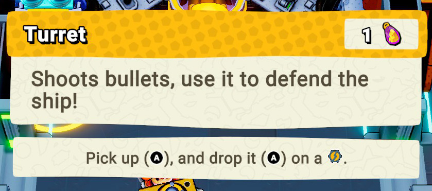This UI was particularly important, as it is the one players see the most. It can be triggered on anything they interact with to provide information, such as modules, items, weapons, tools, and parts of the ship. It was sometimes hard to see, so I made the UI brighter and used colors to code all the elements so players could quickly identify the type of object they were inspecting. I also used colors to highlight important information and moved the interaction instructions out to make them more visible as well.
Map selection, ship selection, waiting for players: Old UI and flow.
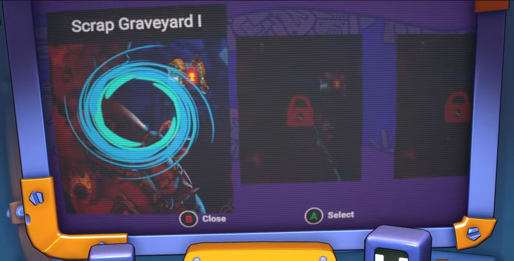 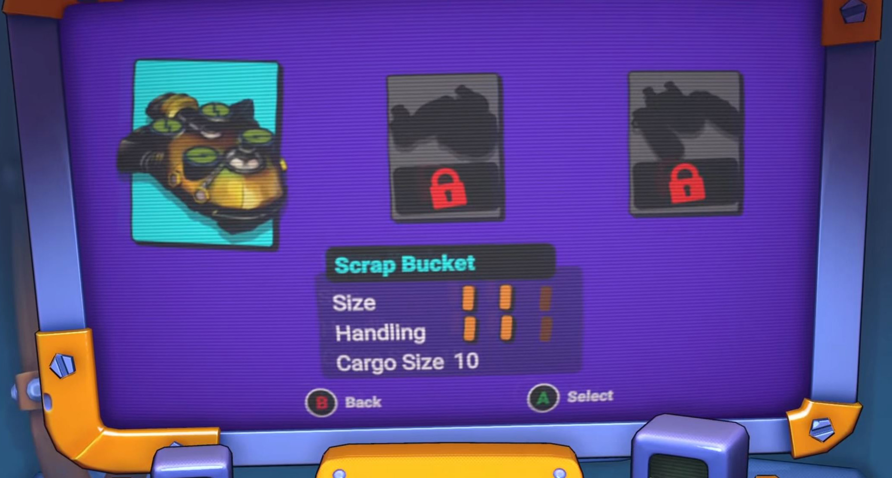 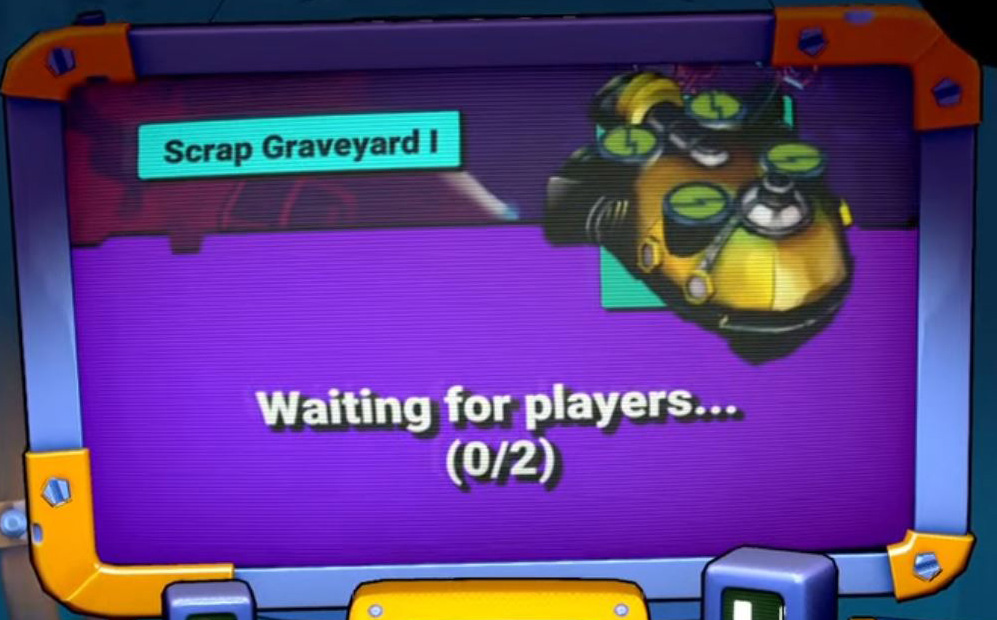Map selection, ship selection, waiting for players: New UI and flow.
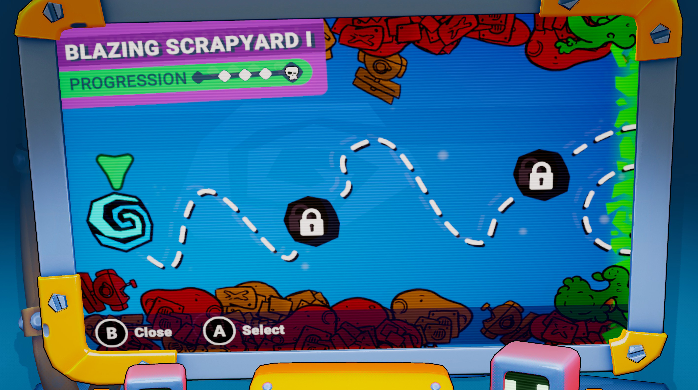 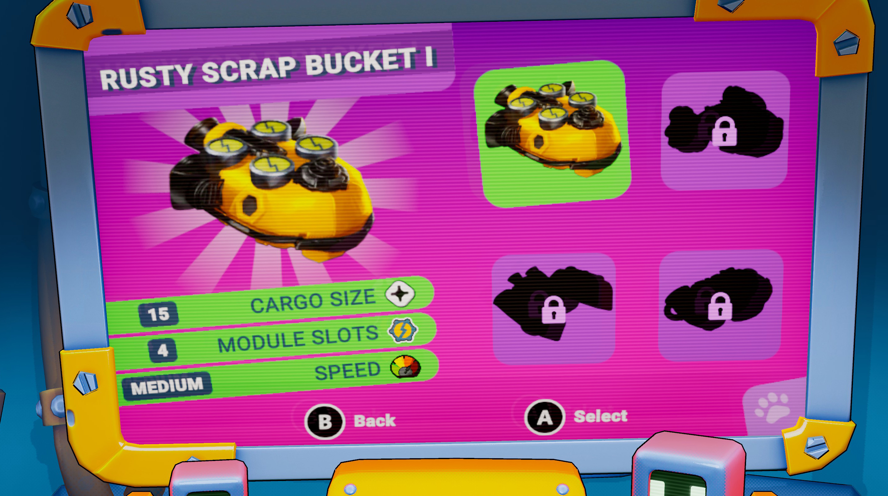 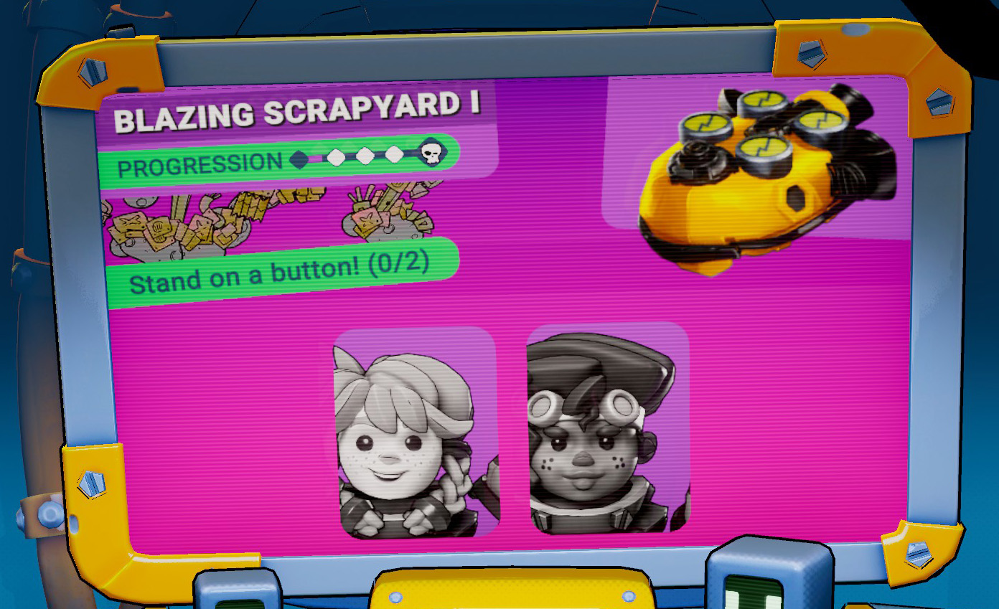This was a very interesting UI to rework. It is a screen displayed within a 3D object inside the main
scene. Players use the console inside the Station, so this small screen needs to display very clear
information. The colors were reworked, as well as the complete layout of each screen. The map selection,
which used to be just a scrollable list, was changed to a full map where players can navigate from one
teleporter to another. The ship selection now shows the ship in a larger view to showcase our ships up
close, with the stats taking up half of the screen to make them more visible.
The final screen displays and reminds players which map and ship were chosen. It also shows the
portraits of the player characters along with the prompt "Stand on a button!" The portraits become
colored and tilt slightly to the side in the "activated state."
This choice was made to address a problem we observed with players. After picking a map and a ship,
buttons would pop out of the ground on which players had to stand to continue. However, either they
wouldn’t see them right away, or one of them wasn’t standing properly on their button without realizing
it. With the prompt, they know they have to stand on the buttons, and with the portraits, they can see
who is standing on their button correctly, as they go into the "activated state" when they do.